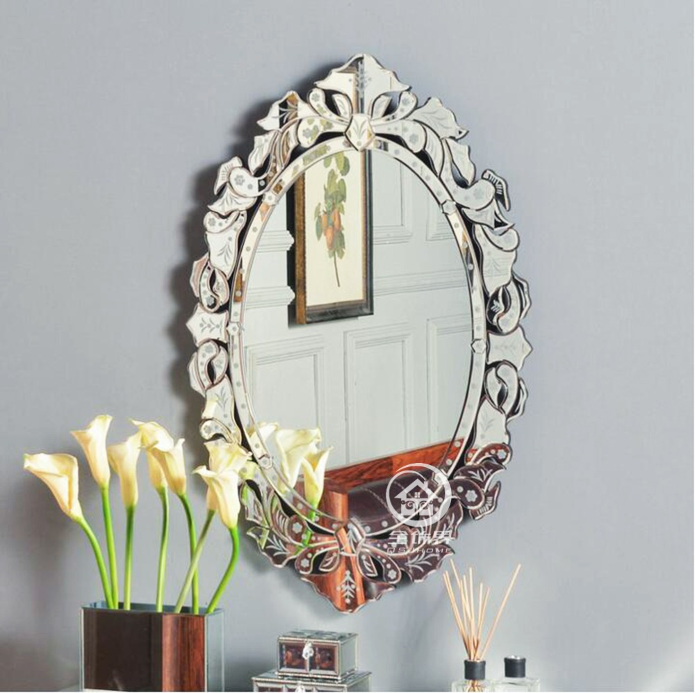

Semakin berkembangnya kemajuan zaman, menjadikan banyak bahan atau material komplementer yang dapat mempercantik hunian atau daerah usaha anda. Banyak material pendukung yang bisa diterapkan seperti kaca, parket lantai kayu dan masih banyak lagi. Tidak hanya memperindah, tetapi material pelangkap hal yang demikian bisa memberi garansi keamanan pada penghuni di dalamnya. Tapi kini, pengaplikasian kaca semakin meluas. Banyak ragam dari kaca yang dapat di pakai untuk banguan ataupun rumah tinggal.
Variasi-tipe kaca diantara lain kaca tempered, kaca shower, railing kaca, kanopi kaca dan masih banyak lagi. Semua material tersebut dapat di aplikasikan harga sebuah hunian menonjol lebih menawan nyaman dan juga aman.
Distributor & Supplier Pintu Lipat Kaca Kupang

Pastinya anda telah mengenal banyak kelebihan dari kaca tempered.Pada kenyataannya, harga kaca tempered ini tak terlalu mahal. Mak dari itu, kaca ini ditawarkan dengan harga yang cukup dan relatif murah. Sekarang pasti, modelnya banyak layak dengan yang Anda butuhkan.
Ukuran kaca menjadi elemen penentu berapa harga pintu kaca lipat Kupang yang Anda inginkan. Akan tetapi, ada juga penentu harga lainnya seperti aksesoris. Hinges adalah aksesoris vital, sebab aksesoris inilah yang berperan untuk menopang berat pintu kaca lipat Kupang. Hinges merupakan aksesoris yang penting karena hinges inilah yang menopang berat pintu kaca Anda.
Distributor & Supplier Kaca Shower
Pintu Kaca Shower pada kamar mandi adalah salah satu opsi yang baik untuk desain interior kamar mandi modern. Selain tersebut sekarang bisa anda lakukan dengna menggunakan kaca shower untuk kamar mandi anda. Kelebihan shower screen dibanding dengan cara penyekatan yang lain yakni diwujudkan dalam format yang sudah jadi dan tinggal dipasang saja. Shower screen adalah kotak atau alat yang berfungsi sebagai penyekat ruang khusus untuk kamar mandi. Tentunya banyak kelebihan yang bisa di peroleh dari penggunaan kaca shower pada kamar mandi di rumah anda. Di samping pintu kaca shower akan membikin kamar mandi kecil terlihat lebih besar. Apalagi kini sudah ada warung penjual shower screen yang menjual produknya dalam sistem satu paket termasuk pemasangannnya.
Tak anda sedang membutuhkan kaca shower untuk kamar mandi anda, anda dapat lantas mengunjungi dis.or.id. Tidak hanya itu, kaca shower yang di beli di dis.or.id pemasangan lebih gampang dan fleksibel. Harga yang ditawarkan pun tergolong benar-benar murah. Anda bisa buktikan sendiri.
Distributor, Supplier & Jasa Pasang Kanopi Kaca

Pintu Kaca Shower pada kamar mandi merupakan salah satu pilihan yang baik untuk desain interior kamar mandi modern. Diantaraya ialah kaca tempered 8 mm, kaca tempered 10 mm clear, kaca tempered 12 mm clear, kaca laminated 12 mm clear, kaca laminated 5 mm + 5 mm clear non tempered kaca, kaca laminated 5 mm + 5 mm tempered clear dan masih banyak lagi. Atap kaca skylight ditujukkan untuk menerima sinar alami UV yang mempunyai fungsi sebagai penerangan dalam sebuah ruang. Harga atap kaca per meter persegi juga betul-betul dipengaruhi oleh struktur pendorong yang di pakai. Disinilah letak perbedaan optis yang utama antara akrilik (acrylic) dengan kaca. Kalau tembus pandang, kaca mengabsorpsi sinar yang masuk sehingga kian tebal kaca maka kian sedikit cahaya yang bisa melaluinya, maka sifat transparannya makin berkurang.|Di samping pintu kaca shower akan membuat kamar mandi kecil menonjol lebih besar.
Sekarang anda dapat menerima kanopi kaca dengan mutu terbaik dan juga berkualitas di dis.or.id. Terdapat banyak kanopi dengan berjenis-jenis ukuran dan ketebalan yang bisa anda pilih layak dengan yang anda butuhkan. Banyak bangunan seperti gedung perkantoran, perumahan, ruko dan apartement yang mengaplikasikan kanopi kaca tempered. Kalau fungsi utama kanopi sebagai pelindung untuk bangunan tersebut, pemasangan kanopi kaca juga dapat membikin bangunan menjadi menonjol lebih menawan dan menarik, apalagi memakai konsep yang sama dengan konsep rumah minimalis.
Jasa Maintenance Kaca
Jasa maintenance kaca merupakan perusahaan yang akan menolong supaya gedung perkantoran Anda menonjol seperti baru. Salah satunya pelayanan berupa pembersihan gedung yang terbuat dari kaca. Berjenis-jenis, kaca akan nampak kusam sebab telah lama tak dibersihkan. Dis.or.id memiliki kekuatan spesialis yang dapat kapabel membersihkan gedung pencakar langit yang bangunannya terbuat dari kaca. Apabila itu, sanggup membersihkan bangunan kaca melengkung.
Dis.or.id menyiapkan segala macam kaca sesuai kebutuhan saat ini. Jikalau juga dengan warna dan bentuk kaca.
Tak anda mebutuhkan jasa maintenance kaca, anda dapat mengunjungi dis.or.id. Disana anda bisa memanfaatkan jasa maintenance kaca dengan energi pakar yang sanggup membersihkan gedung kaca dengan produk pembersih kaca apa yang terbaik untuk menghilangkan kotoran dan kusam. Dis.or.id memiliki seluruh kekuatan ahli yang di rekrut cuma mereka yang profesional yang tahu persis bagaimana sistem memakai alat dan bagaimana membersihkan kaca gedung bertingkat. Oleh karena itu, dis.or.id hanya memilih orang-orang yang amat profesional dan telah mempunyai pengalaman dalam hal maintenance kaca. Dengan telah memberikan training terhadap daya ahli sehingga mereka sudah bisa mengerjakan profesi mereka dengan sangat bagus.
Jasa Pemasangan Kaca Tempered

Tak yang telah di ketahui bahwa jasa pemasangan kaca tempered hanya dilaksanakan oleh orang yang profesional. Kini alat khusus untuk memotong ragam kaca yang satu ini. Sementara itu, untuk rumah hunian, bagian dari rumah seperti kamar mandi serta kanopi lazimnya terbuat dari kaca tempered. Selain sembarang tukang juga dapat menjalankan cara kerja pemotongan ini. Namun dulu hanya gedung perkantoran atau pusat perbelanjaan modern saja yang memakai variasi kaca ini, kini rumah hunian juga sudah dibangun dengan kaca tempered.
Salah satu macam kaca yang sesuai untuk dipakai pada semua tipe bangunan ataupun perindustrian adalah kaca tempered, merupakan yang paling aman karena memiliki elastisitas lebih baik dibandingi dengan kaca umumnya. Sekarang dari kaca tempered dapat mengurangi bahaya cedera dikala kaca pecah karena saat terjadi sesuatu seperti kaca pecah karenanya kaca tempered akan terurai menjadi butiran kecil yang relatif lebih aman dari potongan pecahan kaca biasa. Tak saat ini anda sedang berkeinginan membangun suatu bangunan atau gedung, anda dapat memanfaatkan kaca tempered untuk digunakan langsung ke segala variasi bidang.
Distributor & Supplier Pintu Kaca
Kini sudah hadir ratusan pintu kaca dengan desain yang berbeda-beda yang bisa di buat dan di pesan, entah itu pintu kaca frameless (tanpa bingkai) atau pintu kaca dengan bingkai. Tersedia juga aluminium dan kayu apabila Anda berkeinginan memiliki pintu kaca dengan pigura. Kini tersebut bisa terbuat dari kayu atau aluminum. Kini tidak kalah penting lagi adalah pemilihan kaca. Dalam hal ini, terdapat beberapa jenis kaca dengan kwalitas yang terbaik. Kini paling banyak diminati saat ini ialah kaca tempered sebab jauh lebih kuat dan tahan lama.
Dis.or id siap membantu anda untuk membuatkan pintu kaca idaman anda. Sekiranya pakar yang benar-benar profesional sehingga betul-betul siap untuk mewujudkan pintu kaca seperti apa yang ingin Anda miliki.
Terdapat juga pilihan lain berapa kaca non-tempered yang harganya relatif lebih murah. Anda bisa memilih kaca tempered yang kini ini sedang naik daun. Untuk budget yang lebih sedikit, Anda bisa memilih variasi kaca non-tempered.
Jual Kaca Cermin

Kaca cermin maupun kaca reflektif adalah tipe kaca yang bisa memantulkan sinar dan mereduksi sifat tembus pandang dari sisi luar, sehingga acap kali pula disebut dengan kaca one way. Kaca cermin dilapisi dengan pelapis transparan tipis dan oksida logam sebagai lapisan pelapis. Cermin dengan bermacam ukuran juga tersedia. Jadi, Anda dapat sesuaikan desainnya dengan desain ruangan yang akan Anda pilih untuk menempatkan cermin hal yang demikian. Sementara itu, saat dipandang dari luar, kaca ini reflektif. Jika itu, sesekali cerminnya tidak ada framenya atau yang sering disebut dengan kaca cermin frameless.
Dis.or.id merupakan penyedia berjenis-jenis ukuran kaca cermin yang dapat anda aplikasikan ke gedung, kantor maupun rumah anda. Tak saja, desainnya saja yang dirubah. Malah, ada juga furniture berupa pintu yang terbuat dari kaca cermin. Akan lebih menarik lagi sekiranya Anda mengaplikasikan kaca cermin ini sebagai bahan utama furniture. Anda dapat menambahkan pigura atau tanpa pigura layak dengan kesukaan Anda. Jadi, orang di luar tidak bisa mengamati Anda berada di dalam. Melainkan, Anda dapat memandang orang lain dari dalam rumah. Dis.or.id menyediakan kaca cermin yang dapat anda beli dengan harga yang betul-betul murah dan dengan kwalitas terbaik.
Jasa Pemasangan Railing Kaca
Railing kaca menjadi salah satu bagian yang akan membuat nampak benar-benar minimalis. Mungkin hal ini disebabkan semakin banyak pemilik rumah yang berkeinginan memperlihatkan sebuah desain interior rumah yang benar-benar minimalis. Kecuali ini disebabkan semakin banyak permintaan kepada railing ini. Pastikan bagian hal yang demikian terbuat dari bahan aluminum yang kuat. Dan kaca ini bisa Anda gunakan sebagai bahan untuk membuat kaca railing. Sebaiknya gunakan kaca tempered sebab tipe kaca ini sangat kuat.
Dalam hal ini, Anda dapat menentukan sendiri berapa ketebalan dari kaca yang dipakai hal yang demikian. Tidak ini tak cuma ditentukan oleh ketebalan atau harga tetapi juga oleh variasi. Kaca ini betul-betul kuat dan juga aman. Dengan demikian, pecahan kaca tempered tidak akan melukai orang yang terkena pecahan. Selain disana terdapat banyak tersedia bermacam ukuran railing kaca dengan desain yang anda inginkan. Bila memberikan kesan minimalis pada interior rumah, ini juga membuat rumah Anda kelihatan lebih nyaman untuk diciptakan daerah tinggal.
Railing kaca dengan kwalitas terbaik bisa anda dapatkan di dis.or.id. Dengan harga yang benar-benar relatif murah, anda dapat seketika menerima railing kaca yanag anda inginkan. Tentu dengan harga yang murah tapi konsisten berkelas.
Jasa Pemasangan Kubikel Toilet

Kubikel kamar kecil mempunyai desain yang mewah dan elegan sehingga siapa saja yang melihatnya pasti akan beratensi, tidak hanya itu kubikel kaca memberikan kesan bersih, rapid an tersusun. Banyak keuntungan yang bisa didapat dengan mengaplikasikan kubikel WC seperti dapat membuat kamar kecil kelihatan lebih bersih dan juga hanya membutuhkan sedikit space.
Dengan menggunakan toilet kubikel tentnya toilet yang anda miliki Tampak lebih elegan dan mewan jauh dari kesan kotor. Seandainya anda sedang memerlukan kubikel toilet, anda bisa seketika mengunjungi website dis.or.id. Kamar kubikel juga memberikan hal yang efisien dan tepat sasaran dalam pembagian space kamar mandi yang kecil.
Tersedia beraneka ukuran serta ketebalan dari kubikel yang bisa anda pilih layak dengan yang anda inginkan.
Melainkan pengaplikasian kaca di kamar mandi dapat jadi problem dikala Anda meletakkannya dengan salah.
Distributor & Supplier Partisi Kaca

Partisi kaca dipakai dimana saja. Tidak sebagai pembatas di mall, hotel, atau kantor-kantor saja, tetapi juga digunakan sebagai sekat ruangan di rumah hunian. tertentu seperti kamar mandi dalam atau taman dalam ruang yang terdapat di tengah atau belakang rumah lazimnya mengaplikasikan pembatas berupa partisi kaca. Belum lagi tarif untuk tukang yang lebih banyak daripada pembelian bahan bangunan. Alasan yang ketiga, partisi kaca ini tak menghabiskan space. Anda bisa mengikuti mereka. Kecuali, Anda semestinya tahu ada desain yang berbeda. Ada partisi kaca frameless atau tanpa dan partisi dengan frame. Anda patut tahu ada kaca transparan, semi transparan dan kaca yang sama sekali tidak transparan yang tak jarang disebut dengan kaca cermin. Jika anda kesulitan untuk memasang dinding kaca penyekat, dis.or.id menyediakan jasa pemasangan dinding kaca penyekat untuk kamar mandi rumah anda.